1032B10 toothed timing belt - r + r for timing adjustment or replacement
- Path
- Procedures > 10 ENGINE > 1032 TIMING SYSTEM > 1032B BELT TIMING SYSTEM > 1032B10 toothed timing belt - r + r for timing adjustment or replacement
- Kind
- repair procedure (removal / refitting; the operation number is the code)
- Applies to
- engines: 1.2 8v, 1.4 8v, 1.6 16v, 1.9 JTD 8V, 1.9 DIESEL; all production periods
- Interactive page
- https://sloeber94.github.io/elrnDB-fDbl/en/#/2584193
Applies to: engines: 1.2 8v; all production periods
 Removing
Removing
 Refitting
RefittingPosition the vehicle on a lift.
Op. 1048A10 AIR FILTER ASSEMBLY - R.R.
Op. 1032D12 TIMING SYSTEM PROTECTIVE COVER(S) - R + R
Op. 4450B04 RIGHT FRONT WHEEL - R.R.
Op. 7055B54 PROTECTION/GUARD UNDER ENGINE - R.R.
Op. 1092B60 ALTERNATOR DRIVE BELT - R + R
Op. 1092A10 CRANKSHAFT PULLEY - R + R
Lower the lift.
1. Position a bracket to anchor the engine.
2. Fit the engine mounting beam and anchor a hook to the bracket positioned previously.
Description | Code | |
|---|---|---|
2 | Crossmember | 1.870.595.000 |
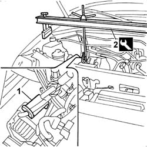
Applies to: engines: 1.2 8v; all production periods
1. Unscrew the timing block central bolt.
Raise the vehicle.
2. Undo the retaining bolts (2a), lower the vehicle and remove the timing side engine mount (2b) from the top part of the engine compartment.
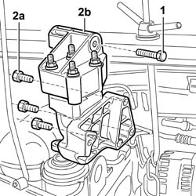
Applies to: engines: 1.2 8v; all production periods
1. Turn the crankshaft until the notch on driven pulley (1a) is aligned with the notch on cylinder head (1b) and notch on drive pulley (1c) with reference (1d) on the oil pump case.
2. Loosen the nut retaining the moving tensioner (2a) and release the timing belt (2b).
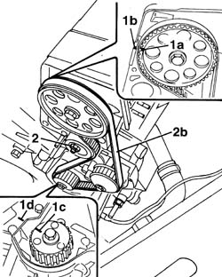
Applies to: engines: 1.2 8v; all production periods
Refitting
Removing1. Fit a new timing belt on the pulleys.
2. Check the timing is correct by checking that the notch on driven pulley (2a) is aligned with the notch on cylinder head (2b) and htat the notch on drive pulley (2c) is aligned with reference (2d) on the oil pump case.
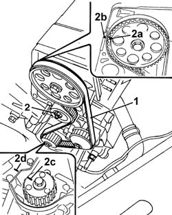
Applies to: engines: 1.2 8v; all production periods
1. Use tool (1a) and (1b) and position weight (1c) without the knurled part at a distance of 65 mm on the calibrated rod (1d) and lock it by tightening the butterfly nut (1e).
Description | Code | |
|---|---|---|
1a | Toothed belt tensioning tool | 1.060.745.100 |
Description | Code | |
|---|---|---|
1b | Part for tensioning toothed belt | 1.060.745.300 |
2. Apply the tool to mobile tensioner (2a) and adjust the calibrated rod until it is horizontal and lock with nut (2b).
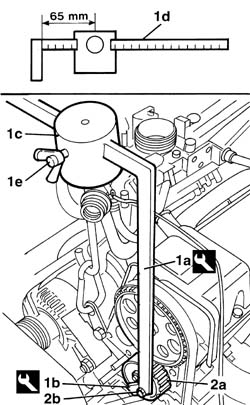
Applies to: engines: 1.2 8v; all production periods
Turn the crankshaft through two turns and ensure the references on the driven pulley and drive pulley coincide with the fixed references on the cylinder head and oil pump case.
Tighten the tensioner retaining nut and remove the tool used for tensioning.
Fastening | Component | dia | Value (daNm) | |
|---|---|---|---|---|
- | Bolt | MOBILE TIMING TENSIONER | M8 X 1.25 | 2.8 |
Description | Code | |
|---|---|---|
- | Toothed belt tensioning tool | 1.060.745.100 |
Description | Code | |
|---|---|---|
- | Part for tensioning toothed belt | 1.060.745.300 |
Fit the engine mount assembly/block and tighten the fixing bolts to torque.
Fastening | Component | dia | Value (daNm) | |
|---|---|---|---|---|
- | Bolt | RIGID ENGINE MOUNT, TIMING SIDE | M10 X 1.25 | (Engine) 6 |
Fastening | Component | dia | Value (daNm) | |
|---|---|---|---|---|
- | Bolt | RIGID ENGINE MOUNT, TIMING SIDE | M8 X 1.25 | (Engine) 2.2 |
Remove the crossmember positioned previously to support the engine.
Description | Code | |
|---|---|---|
- | Crossmember | 1.870.595.000 |
Remove the bracket positioned previously to secure the engine mounting crossmember hook.
Op. 1092A10 CRANKSHAFT PULLEY - R + R
Op. 1092B60 ALTERNATOR DRIVE BELT - R + R
Op. 7055B54 PROTECTION/GUARD UNDER ENGINE - R.R.
Op. 4450B04 RIGHT FRONT WHEEL - R.R.
Op. 1032D12 TIMING SYSTEM PROTECTIVE COVER(S) - R + R
Op. 1048A10 AIR FILTER ASSEMBLY - R.R.
Remove the vehicle from the lift.
Applies to: engines: 1.6 16v; all production periods
Removing
RefittingPosition the vehicle on a lift.
Disconnect the negative battery terminal.
Description | Connector | |
|---|---|---|
- | Battery |
Op. 5530B52 BATTERY SUPPORT/DRIP TRAY - R.R.
Op. 1048A32 HOSE FROM AIR FILTER TO INTAKE MANIFOLD - R.R.
Op. 1048A10 AIR FILTER ASSEMBLY - R.R.
Op. 1056B82 INJECTION/IGNITION SYSTEM E.C.U. (ONE) - R + R
Op. 1056B87 IGNITION/INJECTION SYSTEM CONTROL UNIT SUPPORT - R.R.
Op. 1036G48 REAR SEAL FOR CAMSHAFT FOR ONE CAMSHAFT HOUSING, LEFT OR RIGHT - R.R. AND REPLACE SEAL
Op. 5510C14 IGNITION COIL/S - R+R
Op. 4450B04 RIGHT FRONT WHEEL - R.R.
Op. 7055B54 PROTECTION/GUARD UNDER ENGINE - R.R.
Op. 1092B50 ALTERNATOR/WATER PUMP DRIVE BELT - R.R.
Op. 1092B82 AUXILARY BELT MOVING TENSIONER (ONE) -R+R
Op. 1008b10 POWER UNIT FRONT SUPPORT FLEXIBLE MOUNTING (TIMING SIDE) - REPLACE
Op. 1008a46 TIMING SIDE POWER UNIT RIGID SUPPORT - R.R.
1. Turn the crankshaft in its normal direction of rotation, moving notch (1a) on the crankshaft pulley until it is aligned with reference (1b) on the timing belt guard.
2. Check that the reference (2a) stamped on the crankshaft pulley is in line with the rpm sensor (2b).
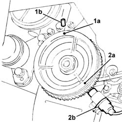
Applies to: engines: 1.6 16v; all production periods
1. Fit the tool (1a) complete with dial gauge (1b) in the seat for the spark plug for cylinder no. 1.
Description | Code | |
|---|---|---|
1a | Dial gauge support | 1.860.895.000 |
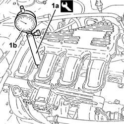
Applies to: engines: 1.6 16v; all production periods
Turn the crankshaft through slight regular movements until the piston for cylinder 1 is at TDC on the dial gauge.
With the piston set to TDC as described above, adjust the camshaft timing.
1. Fit the tools (1a) for timing the camshafts and secure them using the nuts (1b) inserting the tooth (1c) in the splining (1d) on the camshafts.
Description | Code | |
|---|---|---|
1a | Template | 1.860.874.000 |
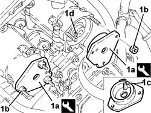
Applies to: engines: 1.6 16v; all production periods
Op. 1092A10 CRANKSHAFT PULLEY - R + R
Op. 1032D12 TIMING SYSTEM PROTECTIVE COVER(S) - R + R
1. Loosen the nut fixing the automatic belt tensioner.
2. Remove the toothed timing belt.
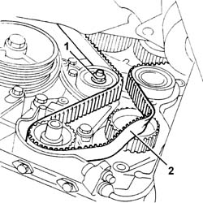
Applies to: engines: 1.6 16v; all production periods
Refitting
Removing1. Loosen the bolts (1a) for the toothed driven pulleys, using the tool (1b) for counter-torque.
Description | Code | |
|---|---|---|
1b | Pulley rotation wrench | 1.860.776.000 |
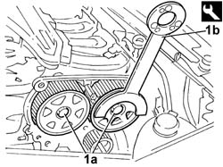
Applies to: engines: 1.6 16v; all production periods
1. Fit the timing toothed drive belt in the following order:
toothed drive pulley (1a)
auxiliary shaft drive pulley (1b)
fixed tensioner (1c)
inlet side driven pulley (1d)
exhaust side driven pulley (1e)
moving tensioner (1f)
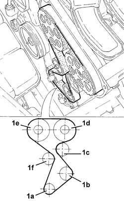
Applies to: engines: 1.6 16v; all production periods
1. Undo the bolt (1a) and fit the tool (1b) for tensioning the toothed timing drive belt.
Description | Code | |
|---|---|---|
1b | Belt tensioner | 1.860.876.000 |
2. Using the tool tension the toothed timing drive belt until it is in the maximum tension position, i.e. with the tensioner moving reference in the end of travel position.
3. Tighten the nut fixing the moving timing tensioner to the recommended torque.
Fastening | Component | dia | Value (daNm) | |
|---|---|---|---|---|
3 | Nut | TIMING STAGE | M8 | 2.5 |
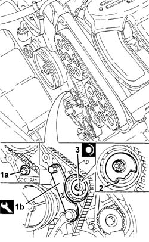
Applies to: engines: 1.6 16v; all production periods
1. Tighten the bolts (1a) fixing the timing driven pulleys to torque using the tool (1b) fitted with a suitable adapator.
Fastening | Component | dia | Value (daNm) | |
|---|---|---|---|---|
1a | Bolt | TOOTHED TIMING BELT | M12 | (Exhaust camshaft side) 12 |
Description | Code | |
|---|---|---|
1b | Pulley rotation wrench | 1.860.776.000 |
Applies to: engines: 1.6 16v; all production periods
Remove the camshaft timing tools.
Description | Code | |
|---|---|---|
- | Template | 1.860.874.000 |
Remove the probe tool complete with dial gauge from the seat for cylinder no. 1.
Description | Code | |
|---|---|---|
- | Dial gauge support | 1.860.895.000 |
Rotate the crankshaft throught two revolutions in its normal direction of rotation.
1. Loosen the nut retaining the timing belt moving tensioner.
2. Using the tool (2a) slowly discharge the toothed timing belt tension until the moving reference (2b) is in line with the fixed reference (2c).
Description | Code | |
|---|---|---|
2a | Belt tensioner | 1.860.876.000 |
Tighten the nut fixing the moving timing tensioner to the recommended torque.
Fastening | Component | dia | Value (daNm) | |
|---|---|---|---|---|
- | Nut | TOOTHED TIMING BELT | M8 | 2.5 |
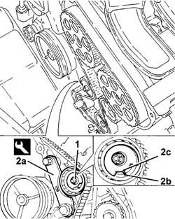
Applies to: engines: 1.6 16v; all production periods
Remove the tool for tensioning the toothed timing drive belt and tighten the bolt removed for positioning.
Op. 1032D12 TIMING SYSTEM PROTECTIVE COVER(S) - R + R
Op. 1092A10 CRANKSHAFT PULLEY - R + R
Op. 1008a46 TIMING SIDE POWER UNIT RIGID SUPPORT - R.R.
Op. 1008b10 POWER UNIT FRONT SUPPORT FLEXIBLE MOUNTING (TIMING SIDE) - REPLACE
Op. 1092B82 AUXILARY BELT MOVING TENSIONER (ONE) -R+R
Op. 1092B50 ALTERNATOR/WATER PUMP DRIVE BELT - R.R.
Op. 1092B54 ALTERNATOR/WATER PUMP DRIVE BELT - ADJUST TENSION
Op. 7055B54 PROTECTION/GUARD UNDER ENGINE - R.R.
Op. 4450B04 RIGHT FRONT WHEEL - R.R.
Op. 5510C14 IGNITION COIL/S - R+R
Op. 1036G48 REAR SEAL FOR CAMSHAFT FOR ONE CAMSHAFT HOUSING, LEFT OR RIGHT - R.R. AND REPLACE SEAL
Op. 1056B87 IGNITION/INJECTION SYSTEM CONTROL UNIT SUPPORT - R.R.
Op. 1056B82 INJECTION/IGNITION SYSTEM E.C.U. (ONE) - R + R
Op. 1048A10 AIR FILTER ASSEMBLY - R.R.
Op. 1048A32 HOSE FROM AIR FILTER TO INTAKE MANIFOLD - R.R.
Op. 5530B52 BATTERY SUPPORT/DRIP TRAY - R.R.
Connect the negative battery terminal.
Description | Connector | |
|---|---|---|
- | Battery |
Remove the vehicle from the lift.
Applies to: engines: 1.9 DIESEL; all production periods
Removing
RefittingOp. 7055B54 PROTECTION/GUARD UNDER ENGINE - R.R.
Op. 4450B04 RIGHT FRONT WHEEL - R.R.
Op. 1092G10 SINGLE ENGINE BELT - R.R.
Op. 1032D12 TIMING SYSTEM PROTECTIVE COVER(S) - R + R
1. Set the engine to TDC on cylinder no. 1 (approximately TDC). Check that the pump locating dowel on the crankshaft is aligned with the engine and turned downward.
2. Check that the notch on toothed timing pulley (2a) is aligned with the notch on the cam cover (2b) and notch (2c) on the injection pump pulley is aligned with reference (2d) on the injection pump mount.
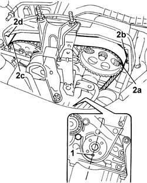
Applies to: engines: 1.9 DIESEL; all production periods
Position a suitable container to collect the coolant leaving the reservoir.
1. Disconnect water pipes (1a) and (1b) from the rigid recirculation section and the rigid water filler inlet to the pump.
2. Undo the retaining bolts.
3. Remove the engine coolant reservoir.
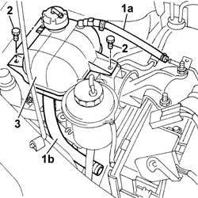
Applies to: engines: 1.9 DIESEL; all production periods
Arrange a hydraulic jack beneath the engine to support it.
1. Undo the three nuts securing the block to the bodyshell.
2. Undo the two nuts securing the mount to the engine.
3. Remove the timing side engine support.
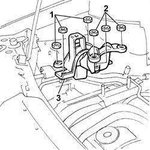
Applies to: engines: 1.9 DIESEL; all production periods
1. Loosen nut (1a), prise up timing belt (1b) from the pulleys and remove.
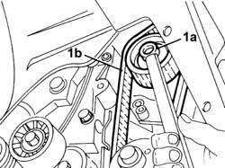
Applies to: engines: 1.9 DIESEL; all production periods
Refitting
RemovingFit the timing belt over the pulleys.
Fit the timing side engine mount by tightening the nuts to the body and engine to torque
Fastening | Component | dia | Value (daNm) | |
|---|---|---|---|---|
- | Nut | RIGID ENGINE MOUNT, TIMING SIDE | M10 X 1.25 | (Bodyshell side) 4.3 |
Fastening | Component | dia | Value (daNm) | |
|---|---|---|---|---|
- | Nut | RIGID ENGINE MOUNT, TIMING SIDE | M10 X 1.25 | (Engine side) 5 |
1. Remove the engine oil pump fixing bolt.
2. Fit the pin for the tool for positioning the engine accurately at T.D.C.
3. Turn the crankshaft using small movements to allow the pulley locating dowel (3a) to enter the opening in the tool (3b).
Description | Code | |
|---|---|---|
2 | Template | 1.860.905.000 |
4. Lock the tool in position using a nut (4a) and service bolt (4b).
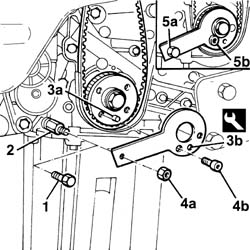
Applies to: engines: 1.9 DIESEL; all production periods
1. Check that the injection pump pulley bolts are loose, insert a cylindrical locating pin (1a) with outer diameter of 6 mm and effective length allowing insertion of approximately 40 mm in hole (1b) on the pump shaft through slot (1c) on the pulley. If the pin cannot be inserted fully home, turn the injection pump shaft by adjusting nut (1d) to align the holes.
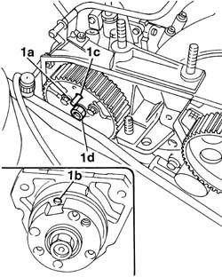
Applies to: engines: 1.9 DIESEL; all production periods
1. Adjusting the semi-automatic tensioning device, place the tensioner pointer (1a) in the maximum tension position, then lock the fixing nut (1b).
2. Lock the rotation of the injection pump pulley by inserting two M6 service bolts (2a) into the holes on the plley, which must coincide with the threaded holes on the pump mount (correct timing). Tighten the bolts (2b) fixing the injection pump pulley.
Fastening | Component | dia | Value (daNm) | |
|---|---|---|---|---|
- | Bolt | INJECTION PUMP TOOTHED DRIVE PULLEY | M8 | 2.5 |
Remove both service bolts applied to lock the injection pump pulley.
Remove the injection pump locating pin.
Remove the tool for T.D.C.
Description | Code | |
|---|---|---|
- | Template | 1.860.905.000 |
Rotate the crankshaft throught two revolutions in its normal direction of rotation.
3. Loosen the nut fixing the tensioner and, working carefully, position the tensioner (3a) reference in line with the reference opening (3b), then tighten the nut (3c) fixing the belt tensioner to torque.
Fastening | Component | dia | Value (daNm) | |
|---|---|---|---|---|
3c | Nut | MOBILE TIMING TENSIONER | M8 | 2.5 |
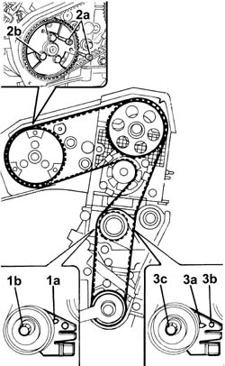
Applies to: engines: 1.9 DIESEL; all production periods
Turn the crankshaft in its normal direction of rotation through a further two revolutions.
Reposition the TDC measurement tool in line with cylinder 1 and check that the locating pin enters the hole on the injection pump (about 40 mm).
Op. 1032D12 TIMING SYSTEM PROTECTIVE COVER(S) - R + R
Op. 1092G10 SINGLE ENGINE BELT - R.R.
Applies to: engines: 1.9 JTD 8V; all production periods
Removing
RefittingPosition the vehicle on a lift.
Proceed with the removal
Op. 4450B04 RIGHT FRONT WHEEL - R.R..
Proceed with the removal
Op. 1092G10 SINGLE ENGINE BELT - R.R..
Proceed with the removal
Op. 1092A10 CRANKSHAFT PULLEY - R + R.
Proceed with the removal
Op. 1008a46 TIMING SIDE POWER UNIT RIGID SUPPORT - R.R..
Proceed with the removal
Op. 1032D12 TIMING SYSTEM PROTECTIVE COVER(S) - R + R.
1. Adjust the bolt fixing the drive pulley and rotate the crankshaft until the timing references are aligned (cylinder 1 at T.D.C.).
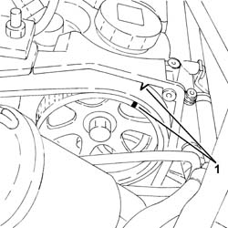
Applies to: engines: 1.9 JTD 8V; all production periods
1. Check that the timing system drive pulley dowel is facing downwards.
2. Loosen nut (2a) of the timing system mobile tensioner and remove toothed timing belt (2b).
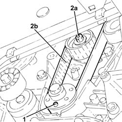
Applies to: engines: 1.9 JTD 8V; all production periods
Refitting
Removing1. Undo the bolt fixing the crankcase front cover shown in the diagram.
Temporarily fit the toothed timing drive belt on the drive pulley.
2. Fit the tool (2a) and fasten it using the calibrated screw (2b).
Description | Code | |
|---|---|---|
2a | Template | 1.860.905.000 |
Description | Code | |
|---|---|---|
2b | Calibrated screw | 1.860.905.010 |
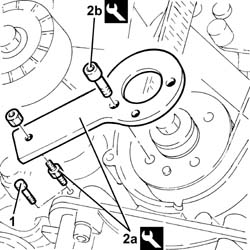
Applies to: engines: 1.9 JTD 8V; all production periods
1. Check that the timing references are aligned.
2. Fully fit the toothed timing drive belt.
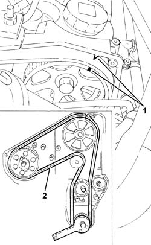
Applies to: engines: 1.9 JTD 8V; all production periods
1. Apply a screwdriver in the opening (1a) for leverage until the reference for the tensioner (1b) corresponds with the reference opening (1c) and tighten the moving tensioner nut (1d) to the recommended torque in this position.
Fastening | Component | dia | Value (daNm) | |
|---|---|---|---|---|
1d | Nut | MOBILE TIMING TENSIONER | M8 | 2.3 ÷ 2.8 |
Remove the tools.
Description | Code | |
|---|---|---|
- | Template | 1.860.905.000 |
Description | Code | |
|---|---|---|
- | Calibrated screw | 1.860.905.010 |
Tighten the bolt fixing the front cover removed previously.
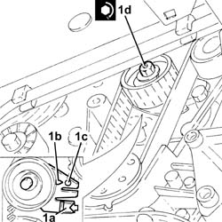
Applies to: engines: 1.9 JTD 8V; all production periods
Rotate the crankshaft through two revolutions.
Check once again that the timing references and the tensioning reference on the moving tensioner correspond.
Proceed with the refitting
Op. 1032D12 TIMING SYSTEM PROTECTIVE COVER(S) - R + R.
Proceed with the refitting
Op. 1008a46 TIMING SIDE POWER UNIT RIGID SUPPORT - R.R..
Proceed with the refitting
Op. 1092A10 CRANKSHAFT PULLEY - R + R.
Proceed with the refitting
Op. 1092G10 SINGLE ENGINE BELT - R.R..
Proceed with the refitting
Op. 4450B04 RIGHT FRONT WHEEL - R.R..
Remove the vehicle from the lift.
Applies to: engines: 1.4 8v; all production periods
Removing
RefittingIf the toothed timing belt is replaced, carry out the following self-learning procedure.
Applies to: engines: 1.4 8v; all production periods
Op. 1048A10 AIR FILTER ASSEMBLY - R.R.
Op. 1032D26 TIMING SYSTEM FRONT PROTECTIVE COVER (UPPER PART) - R.R.
Op. 1092C10 POWER STEERING AND/OR SELF-LEVELLING SUSPENSION PUMP DRIVE BELT - R + R
Op. 1092B40 AIR CONDITIONER COMPRESSOR/ALTERNATOR DRIVE BELT - R + R
Op. 1092A10 CRANKSHAFT PULLEY - R + R
Op. 1032D27 TIMING SYSTEM FRONT PROTECTIVE COVER (LOWER PART) - R.R.
Op. 1008B10 FLEXIBLE MOUNTING FOR POWER UNIT FRONT SUPPORT (TIMING SIDE) - REPLACE
Op. 1008A46 TIMING SIDE POWER UNIT RIGID SUPPORT -R.R.
Op. 1056B82 INJECTION/IGNITION SYSTEM E.C.U. (ONE) - R + R
Op. 1056B87 IGNITION/INJECTION SYSTEM CONTROL UNIT SUPPORT - R.R.
Op. 5510C14 IGNITION COIL/S - R+R
Op. 1016A20 SINGLE TAPPET COVER -R.R AND REPLACE GASKET
1. Undo the nut (1a) of mobile tensioner (1b) and remove the timing belt (1b).
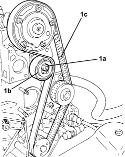
Applies to: engines: 1.4 8v; all production periods
Refitting
Removing1. Remove the threaded cap.
2. Unscrew bolt (2a) securing pulley (2b), applying reaction wrench (2c) to the camshaft splines.
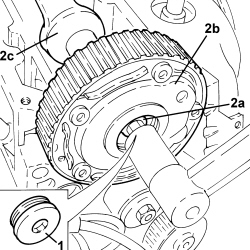
Applies to: engines: 1.4 8v; all production periods
1. Fit the camshaft lock template.
Tool | Description | Function | Validity |
|---|---|---|---|
2000004400 | Template | Camshaft timing | 1.2 8v 1.4 8v |
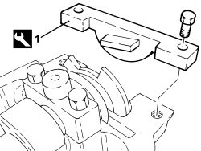
Applies to: engines: 1.4 8v; all production periods
- Fit the timing belt.
1. Fit the camshaft lock template.
Tool | Description | Function | Validity |
|---|---|---|---|
2000004500 | Template | Crankshaft timing | 1.2 8v 1.4 8v |
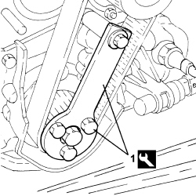
Applies to: engines: 1.4 8v; all production periods
1. Tension the timing belt by turning anticlockwise with tool (1a) and mobile tensioner (1b) and then secure when reference fork (1c) is in contact (1d).
Tool | Description | Function | Validity |
|---|---|---|---|
1860987000 | Spanner | Tensioning toothed timing drive belt | 1.2 8v 1.4 8v |
Op. 1072C44 EXHAUST MANIFOLD HEAT SHIELD R+R
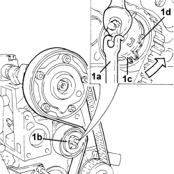
Applies to: engines: 1.4 8v; all production periods
1. Undo the bolts and remove the timing belt side protection.
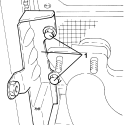
Applies to: engines: 1.4 8v; all production periods
1. Fit tool (1a) and tighten toothed driven pulley bolt (1b).
Tool | Description | Function | Validity |
|---|---|---|---|
2000004200 | Counter-torque | Timing driven pulley lock | 1.4 8v |
Component | Fastening | dia | Value (daNm) | Validity |
|---|---|---|---|---|
Driven toothed pulley | Bolt | M12 | 1.8 ÷ 2.2 + 55° | 1.4 8v |
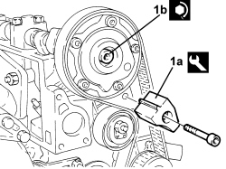
Applies to: engines: 1.4 8v; all production periods
- Tighten the threaded plug to the pulley.
Component | Fastening | dia | Value (daNm) | Validity |
|---|---|---|---|---|
Cap for toothed driven pulley bolt | Plug | M27 | 2.5 ÷ 3.0 | 1.4 8v |
- Remove the three tools fitted previously.
- Turn the engine through two revolutions to settle the timing belt.
- Loosen the belt tensioner nut and adjust the front fork until it is aligned with the rear fork.
- Tighten the belt tensioner nut to the recommended torque.
Component | Fastening | dia | Value (daNm) | Validity |
|---|---|---|---|---|
Timing moving tensioner | Nut | M8 | 2.5 ÷ 3.1 | 1.2 8v 1.4 8v |
- Fit the templates removed previously to check the engine timing adjustment.
Op. 1016A20 SINGLE TAPPET COVER -R.R AND REPLACE GASKET
Op. 5510C14 IGNITION COIL/S - R+R
Op. 1056B87 IGNITION/INJECTION SYSTEM CONTROL UNIT SUPPORT - R.R.
Op. 1056B82 INJECTION/IGNITION SYSTEM E.C.U. (ONE) - R + R
Op. 1008A46 TIMING SIDE POWER UNIT RIGID SUPPORT -R.R.
Op. 1008B10 FLEXIBLE MOUNTING FOR POWER UNIT FRONT SUPPORT (TIMING SIDE) - REPLACE
Op. 1032D27 TIMING SYSTEM FRONT PROTECTIVE COVER (LOWER PART) - R.R.
Op. 1092A10 CRANKSHAFT PULLEY - R + R
Op. 1092B40 AIR CONDITIONER COMPRESSOR/ALTERNATOR DRIVE BELT - R + R
Op. 1092C10 POWER STEERING AND/OR SELF-LEVELLING SUSPENSION PUMP DRIVE BELT - R + R
Op. 1032D26 TIMING SYSTEM FRONT PROTECTIVE COVER (UPPER PART) - R.R.
Topics linked from this page (27)
- 1008a46 cam shaft left rigid mount - r r
- 1008b10 power unit front mount (timing side) flexible block - replace
- 1016A20 single cam cover - r + r and replace gasket
- 1032D12 timing system protective cover(s) - r + r
- 1032D26 TIMING SYSTEM FRONT PROTECTIVE COVER (UPPER PART) - R.R.
- 1032D27 TIMING SYSTEM FRONT PROTECTIVE COVER (LOWER PART) - R.R.
- 1036G48 rear seal of camshaft of one l/h or r/h top head - r + r and replace seal
- 1048A10 air cleaner filtering element - replace
- 1048A32 sleeve from air cleaner to intake manifold - r + r
- 1056B82 injection/ignition system e.c.u. (one) - r + r
- 1056B87 ignition/injection system control unit mount - r r
- 1072C44 exhaust manifold heat shield on bulkhead - r+r
- 1092A10 Crankshaft services PULLEY - R.R.
- 1092B50 alternator/air conditioner compressor drive belt - adjust tension
- 1092B40 AIR CONDITIONER COMPRESSOR/ALTERNATOR DRIVE BELT - R + R
- 1092B54 alternator/water pump drive belt - adjust tension
- 1092B60 alternator drive belt - r + r
- 1092B82 auxilary belt mobile tensioner (one) -r+r
- 1092C10 power steering and/or self-levelling suspension pump drive belt - r + r
- 1092G10 single engine belt r r
- 4450B04 right front wheel r r
- 5510C14 ignition coil/s - r+r
- 5510D10 spark plugs - r+r
- 5530B10 battery - r+r
- 5530B52 Battery DRIP TRAY/SUPPORT - R.R.
- 7055B54 under-engine guard - r r
- A001 BATTERY
Topics that link to this page (33)
- B13 ENGINE STARTS WITH DIFFICULTY'
- D05 ENGINE DOES NOT PRODUCE BEST PERFORMANCE
- D10 ENGINE IDLE IRREGULAR
- Z53 MISFIRE ERROR
- 0510A20 timing gear with belt drive - check - carry out operation with cam cover(s) removed and tappets adjusted
- 0510A30 cam lift - check with cam cover(s) removed
- 1016B20 lh cylinder head extension - replace gasket
- 1016B24 rh cylinder head extension - replace gasket
- 1016C10 cylinder head - r + r and replace gasket
- 1020D12 front crank shaft oil seal cover - r + r and replace seals
- 1020D14 front crank shaft oil seal cover - r + r and replace seals for versions with oil pump on crank shaft, timing side
- 1020D18 front crank shaft cover oil seal - replace
- 1028H20 piston with connecting rod - r r
- 1032B46 toothed drive pulley - r + r
- 1032B52 toothed driven pulley (one) - r + r
- 1032B60 bolt pulley - r r
- 1032B62 TIMING BELT TOOTHED PULLEY - R.R. FOR VERSIONS WITH AIR CONDITIONING
- 1032C18 mobile timing system tensioner - r + r for 24 valve engines
- 1032C32 fixed timing system tensioner (one) r + r
- 1032C42 timing belt tensioner mount - r r
- 1032D34 timing system guard assemblies - r + r
- 1036B10 overhead camshaft - r r on vehicle
- 1036G10 camshaft controlling exhaust valves in top head - r + r with top head removed - includes replacement of top head
- 1036G20 camshaft controlling intake valves in top head - r + r with top head removed - includes replacement of top head if necessary
- 1036C39 PHASE TRANSFORMER ON INLET CAMSHAFT IN CYLINDER HEAD - R.R.
- 1060A10 injection pump - r + r
- 1060A34 injection pump toothed pulley - r + r with timing belt removed
- 1060A70 injection pump mount r r
- 1060E10 pressure pump - r r
- 1060E30 pressure pump pulley - r r
- 1060G22 cam angle sensor - r r
- 1072B10 inlet manifold - r + r and replace seal
- 1088C10 water pump - r + r